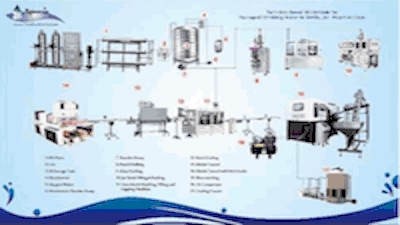
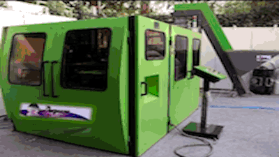
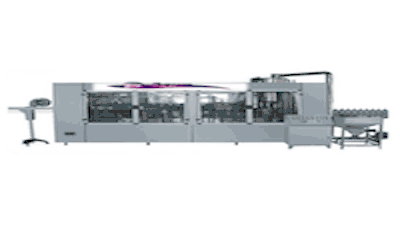
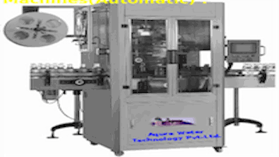

|  | UV Water Treatment Plant |
Ultra filteration |
 |
|  | Water Softener Plant |
Demineralized Water Plant |
 |
RO System RANGE 150-10000 |
|
5000-20000LPH |
10000-50000LPH |
Owing to our rich experience in this domain we have bring forth an exclusive gamut of Industrial RO Plant . Our offered range is precisely designed, developed and engineered by our expert professionals to ensure flawless performance and long functional life at the customer's end. It comprises of an activated carbon and dual media filter to remove turbidity and suspended impurities from the hard water. Besides its extensive features like robust construction, easy installation, hassle free operations and higher efficiency in removing impurities have made it highly demanded in the market. |
Our firm is the prominent manufacturer and trader of a comprehensive array of Industrial RO Plant (10000 to 50000 LPH). We have manufactured our products from the supreme quality fiber reinforced plastic and latest technology to ensure high quality and longer functional life. Our offered range is precisely designed and programmed by our expert professionals to make it suitable for uses in wide applications like food processing, pharmaceuticals, recycling of water, distillation and manufacture of semi conductors. |
10000-100000LPH |
250-300LPH |
We are engaged in manufacturing and trading a quality tested range of Industrial High TDS RO Plant-C Water Plant (10000 to 100000 LPH). Our offered range is fabricated from top quality raw material coupled with advanced technology to deliver high quality and flawless performance at the customer' end. These products are extensively used for removing pesticides and contamination that are dissolved in the water and making it safe for the various industrial and drinking purposes. Clients can avail our products in different specifications according to particular needs. |
Aqure ISO/250/300 industrial reverse osmosis water filtration system has on of th bst featurs in any ro-based water filtration system. Few of the salient featurs are Completely Austomatic Control Panels. Instrumentation Panels and Devics. Electronic TDS controller. LCD/LED Display for chcking vital parameters. State of th Art Memnrane Techonology. Ace Quality high capaticy multistage vertical or Ccentrifugal pumps for their excellent reliability and long life, high quality closing Pumps for accurat operation for closing featur, heavy duty filter cartidges and casings along with high strength Stainless Steel & structrual FRP vessels for sand filter. |
Waste water treatment plant |
|
Sewage Treatment Plant |
Effluent Treatment Plant |
We are one of the prime manufacturer and supplier of various world class plants that are specially made for water treatment. Treatment Plant is regarded as one of the finest performer when the best quality output is required. |
Our company offers competitive range of effluent treatment plant, industrial effluent treatment plant that are used for waste water treatment, which is generated from toilet, bath room and other places. |